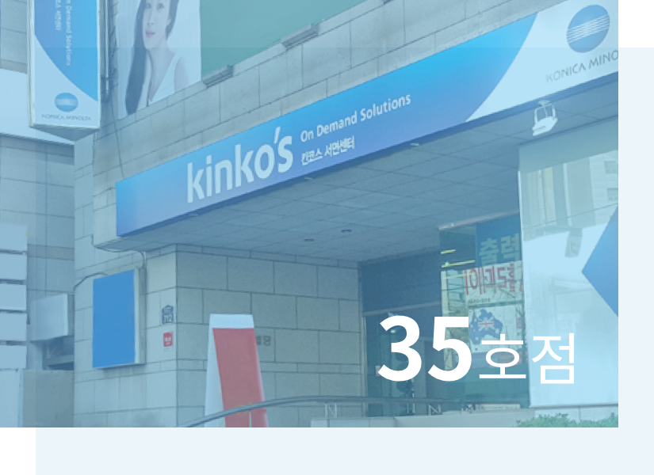
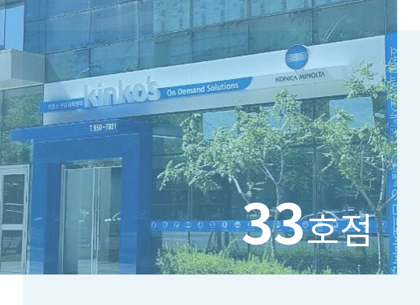
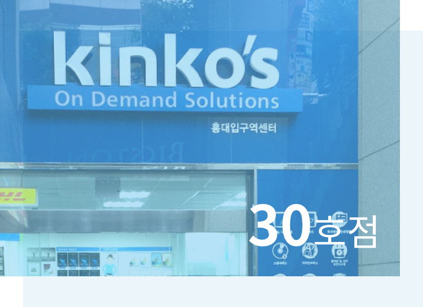
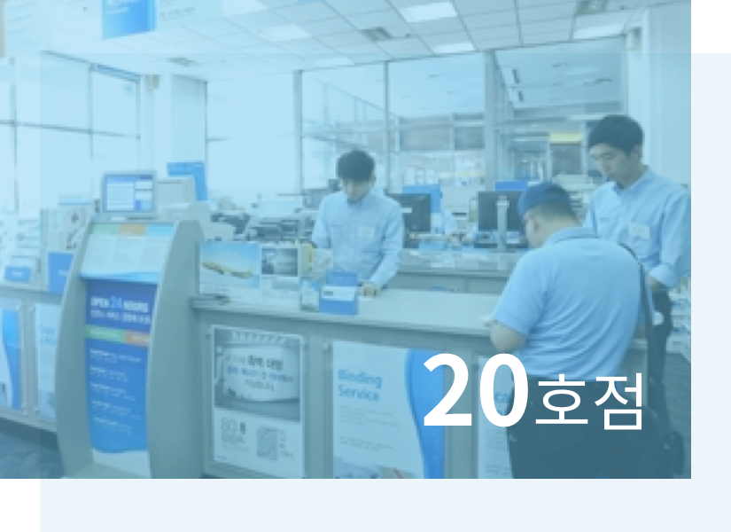
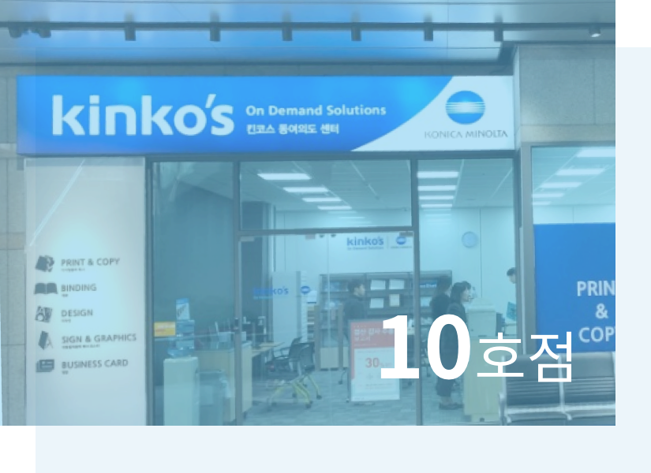

기업이념 및 연혁
고객의 비즈니스 성공 파트너,고객의 “행복”을 출력하는킨코스코리아 입니다.
기업이념
킨코스코리아 기업 이념
킨코스코리아는 ‘문서솔루션 및 광고물 제작 서비스’를 제공하고 있으며, 토탈 솔루션 서비스를
제공하는 ‘Visual Communication 기업’ 입니다.
-
MISSION
컨설턴트
고객의 On Demand에 대해 Total Solutions을
제공하는 컨설턴트가 된다.VISION2070
-
Core Value
-
고객에게
최고의 경험 품질에 대한 약속
신뢰와 책임
최고의 서비스 -
동료간의
최고의 행복 존중과 배려
소통과 화합
성장을 통한 성취감 -
Great기업을 향한
최고의 열정 서비스 전문가 그룹
서비스 개선의 지속적 실행
변화주도와 도전 정신
-
연혁
킨코스코리아는 22년간의 전문노하우로 제작합니다.
킨코스코리아는 고객을 위한 신제품 개발과 사용 경험을 개선하여 새로운 가치를 제공함으로써
보다 전문적이고, 효과적인 홍보물 제작 한경을 경험할 수 있습니다.
-
2019
- - 부산2호점35호점 서면점 오픈
- - 서울/경기/부산 전체 33개 매장 운영
(보안제작지원센터 및 홍보물전문제작센터 운영)
-
2018
Secured Production Center & Sign&Graphic Center
평촌 확장이전 -
2016
- - 부산1호점33호점 센텀시티점 오픈
- - Sign&Graphic Center(홍보물전문제작 센터)오픈
- - B2B 온라인 서비스 오픈
-
2015
30호점 홍대입구역점 오픈
-
2014
- - ISO270001 정보보호 획득을 통한 정보보호관리 서비스 제공
- - Secured Production Center(보안제작지원센터) 오픈
-
2013
Konica Minolta 사와의 합병 / 전 매장 장비&설비 교체
-
2005
- - 전문적이고, 다양한 통합 서비스 제공(기획부터 제작까지)
- - Design Center Open을 통한 전문화된 Document Services 제공
- - 20호점가산디지털단지점 오픈
-
2002
10호점 서여의도점 오픈
-
1995
킨코스코리아 개점